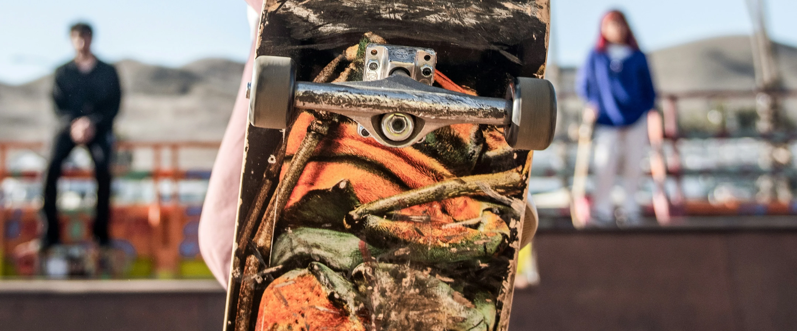

Почитать ещё


5 мин
чеклист перед контестом
Расскажем о том, как не превратиться в жертву своей же страсти.

5 мин
Женщины в мире скейтбординга
Расскажем о том, как не превратиться в жертву своей же страсти.

Личности
5 мин
Как выбрать правильные колеса для скейта
Расскажем о том, как не превратиться в жертву своей же страсти.